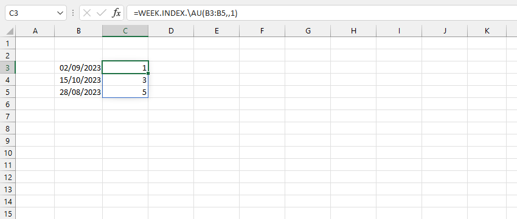
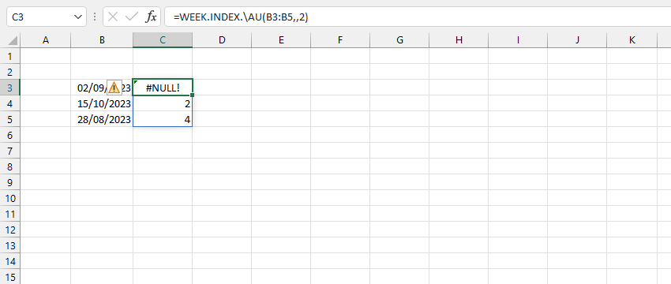

VD1: Tính ngày bắt đầu của tuần dựa trên ngày bắt đầu của mỗi tháng. Tuần 1 của tháng 10 tính từ 1/10 - 7/10.

VD2: Nếu xem mỗi tuần bắt đầu từ Thứ 2. Tuần 1 của tháng 9 tính từ 28/9 - 3/9.
Tuần 1 của tháng 10 tính từ 25/9 - 1/10. Như vậy, ngày 15/10 sẽ thuộc tuần 3 từ 9/10-15/10. Danh sách là:
VD3: Nếu xem mỗi tuần bắt đầu từ Thứ 2 nhưng chỉ áp dụng trong phạm vi tháng, Tuần 1 của tháng 9 tính từ 4/9 - 10/9.
Tuần 1 của tháng 10 tính từ 2/10-8/10. Như vậy, ngày 15/10 sẽ thuộc tuần 2 từ 9/10-15/10. Danh sách là:
Related function
MONTH.NAME Trả về tên của một tháng trong năm (hỗ trợ nhiều ngôn ngữ).
TIME.NOW Trả về thời gian hiện tại ở định dạng chuỗi.
DATETIME.NOW Trả về ngày tháng và thời gian hiện tại ở định dạng chuỗi.
Return to Home